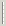

On distingue deux types de boutons dans une barre d'outils (propriété Type dans l’éditeur de barres d'outils de Xwin) :
1. Boutons terminaux
Un bouton terminal est visualisé à l'écran par un texte et/ou une image bitmap.
La sélection d'un tel bouton déclenche un événement que le programme doit traiter. Le bouton peut générer un point d’arrêt, un point de traitement ou une chaîne de caractères (en général une touche de fonction).
Une bulle peut être associée au bouton.
Un bouton terminal peut simuler une case à cocher ou un bouton radio. Ces boutons "à cocher" sont généralement utilisés pour activer ou désactiver une option du programme, le « dessin de la coche » servant à montrer à l’utilisateur si l’option est ou non active.
Le bouton peut être désactivé. Dans ce cas, il apparaît grisé à l'écran et ne peut plus être sélectionné.
2. Séparateurs
Un séparateur est un bouton fictif, utilisé pour séparer visuellement deux groupes de bouton. Il est représenté à l'écran par un double trait vertical :

.Un séparateur ne peut pas être sélectionné. Il ne peut être ni coché ni grisé. Aucune bulle ne peut lui être associée.